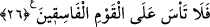

25- Mûsâ: «Rabbim! Ben kendimden ve kardeşimden başkasına hâkim
olamıyorum; bizimle, bu yoldan çıkmış toplumun arasını ayır.» dedi.
“Mûsâ” (a.s.) onların inat ettiğini görünce rahmeti ve yardımı celbedici bir kalp
rikkati (yumuşaklığı) ile üzüntü, hüzün ve Allah Teâlâ’ya şikâyet yoluyla niyazda
bulunup: “Rabbim! Ben kendimden ve kardeşimden başkasına hâkim olamıyorum.”
Yani ancak kendime ve kardeşime söz geçirebiliyorum. Kendisini ve kardeşini
kastederek “bizimle, o yoldan çıkmış” sana taatten çıkıp isyanda ısrar eden “toplumun
arasını” bizim lehimize, onların aleyhine hükmederek “ayır! dedi.”
26- Allah, «Öyleyse orası (arz-ı mukaddes) onlara kırk yıl yasaklanmıştır; (bu
müddet içinde) yeryüzünde şaşkın şaşkın dolaşacaklar. Artık sen, yoldan çıkmış
toplum için üzülme.» buyurdu.
“Allah” Teâlâ “Öyleyse orası” yani mukaddes toprak kesin olarak “onlara kırk yıl
yasaklanmıştır”, haram kılınmıştır. Buradaki yasaklama, ibâdetlerle ilgili olan haram
mânâsına değil, men içindir. Oraya giremez ve orayı mülk edinemezler. Çünkü orası
onlara ancak îman ve cihad şartıyla takdir edilmişti. Arkalarına döndükleri için orası
kendilerine haram kılındı ve hüsrâna uğramış bir halde geri döndüler.
Yasaklama, kırk yıllık süre ile sınırlandırılmıştır, daimî değildir. Bu âyet, yukarıdaki
“Allah’ın size (vatan olarak) yazdığı mukaddes toprağa girin...” (Mâide, 5/21)
âyetine muhâlif değildir. Buradaki yasaklamanın mânâsı, onlardan hiçbirinin bu süre
içinde oraya giremeyeceğidir. Yoksa onlardan hepsinin bu sürenin bitiminde oraya
gireceği anlamında değil.
“Yeryüzünde şaşkın şaşkın dolaşacaklar.” Yani yeryüzünde (karada) şaşkına
döneceklerdir. Bu cümle onlara buranın haram kılınmasının keyfiyetini açıklamak için
getirilmiş olan müstakil bir cümledir. “Artık sen yoldan çıkmış toplum için üzülme.”
buyurdu.”
Rivâyete göre Mûsâ (a.s.) onlara yaptığı bedduaya pişman olmuştu. Bunun üzerine
ona: “Pişmanlık duyup onlara üzülme, çünkü onlar bu fasık hareketleri sebebiyle bunu
hak eden kişilerdir.” denildi.
İsrâiloğulları, kırk sene bu altı fersahlık uzaklıktaki yerde bekleştiler. Onlar, altı yüz
bin savaşçıydılar. Her gün yeniden hareket edip yürüyorlar, fakat akşam olunca
kendilerini ayrıldıkları yerlerinde buluyorlardı. Onların üzerinde güneşin sıcağından
gölgeleyen bir bulut vardı. Geceleyin de ışıktan bir sütun onlara ışık veriyordu. Onlara
kudret helvası ve bıldırcın eti indiriliyordu. Onların saçları da uzamazdı. Çocukları
olduğu zaman üzerinde elbise oluyor, çocuk büyüdükçe tırnak gibi elbise de büyüyordu.